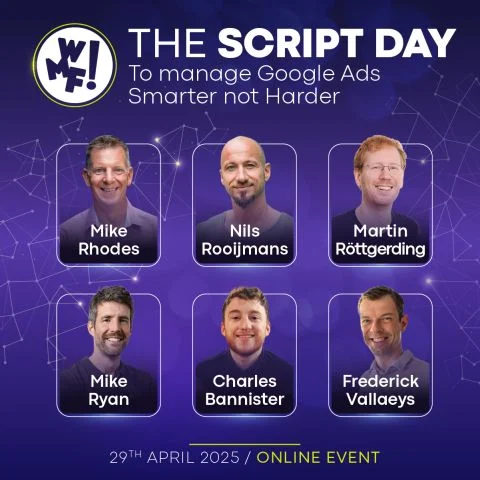
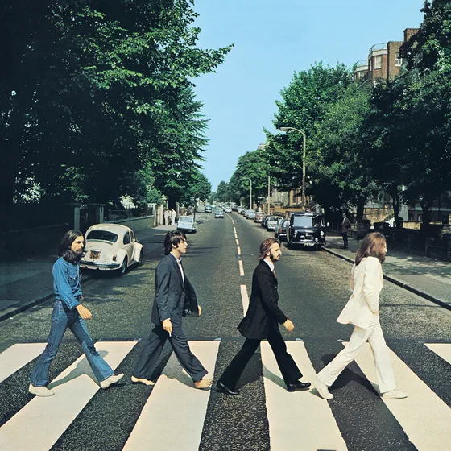
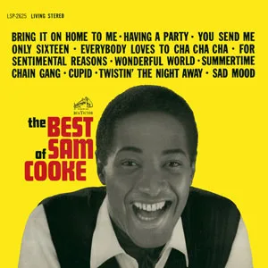
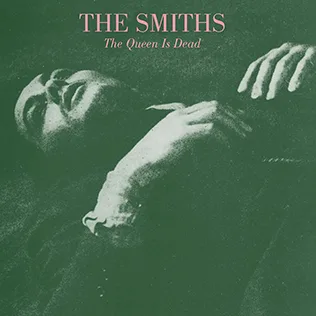
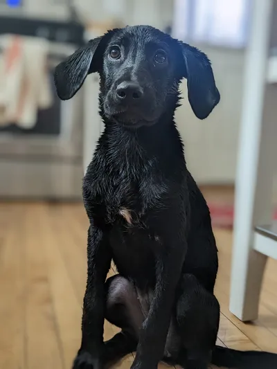

I’m an independent marketer and developer based in Chicago. I’ve spent about 14 years working in marketing and technology, and I’ve freelanced since 2017.
How I got here
I started in paid search and moved through commercial analysis into e-commerce management at Limitless Digital. That taught me to look beyond an ad account at margins, stock and what it costs the business to make a sale.
As a freelancer I’ve helped manage millions of US dollars in ad spend, often alongside other people. I’ve also built software for paid media teams, including GoDaddy, and published free tools for people who run their own accounts.
I like working on the parts that fall between disciplines. Sometimes the answer is a better campaign. Sometimes it’s a clearer page, better tracking or a small piece of software that gives the team time back.
Speaking & community

Guest speaker, The Script Day
WMF & Search On · Online · 29 April 2025
I spoke alongside Mike Rhodes, Nils Rooijmans, Martin Röttgerding, Mike Ryan and Frederick Vallaeys at The Script Day, a webinar series on managing Google Ads smarter, not harder. My session covered automating negative keywords with scripts.
Mentioned on Marketing O'Clock
My work was mentioned on Marketing O'Clock, the weekly digital marketing news podcast.
Community Hero, God Tier Ads
I'm a Community Hero in God Tier Ads, a community of Google Ads professionals, where I share scripts and tools.
Upwork
I've been working successfully on Upwork since 2017.
If I had to take five artists to a desert island I'd probably take The Smiths, The Beatles, Sam Cooke, The Kinks...then probably something operatic or classical - it would be a nice change.

The second half of this album, in particular, is a masterclass

Sam Cooke's live version of Try a Little Tenderness is superb

Probably my favourite Smiths album, but it's all good.
I often attempt songs from these artists on my guitar to the dismay of my neighbours, dog and wife.

Frankie, the dog in question. Absolutely bonkers.
I'm also learning Spanish at a snail's pace. Yo se un pocito palabras (no idea if that's right), but I can't understand anything people say back to me, unfortunately.
I'm also into baking and growing herbs, though the twain seldom meet.
The herb thing is new. I currently have some Basil and Scallions peeking their heads above the soil and it's very exciting.
Plus just, ya know, watching Telly! Maybe it's boring, but a Tuesday eve with my wife, a glass of red (Garnacha) and an episode of Gogglebox is a real treat.
But enough about me!
Up the Pool!
Let’s see if we’re a good fit.
Tell me what you want to improve. We’ll talk through what you’ve tried, what’s getting in the way and where I can help.